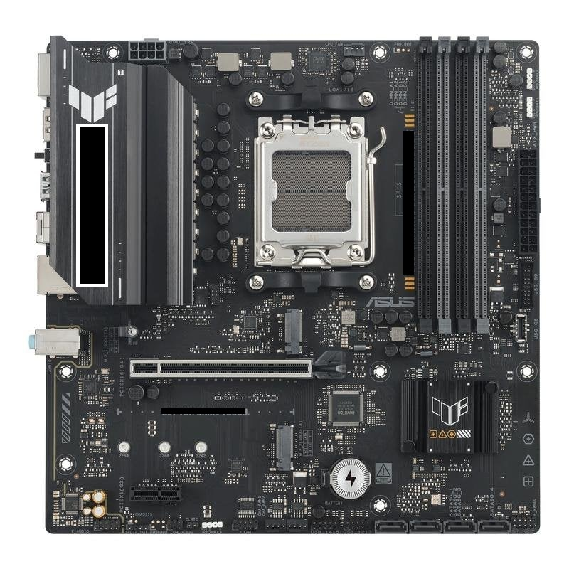

1º ASIR · FHW — Sobre la foto real de una Motherboard. Pulsa un botón para ver cómo fluye la energía (conectores → VRM → componentes) o cómo viaja la información (CPU ↔ RAM ↔ Chipset). Las animaciones son una visualización educativa, no electricidad real visible.

Ley de Ohm · Potencia eléctrica · Corriente continua vs. corriente alterna — pensado como complemento a la placa base interactiva.
La ley de Ohm relaciona tres magnitudes en cualquier circuito eléctrico:
Dicho de forma sencilla: cuanta más resistencia oponga un componente, más tensión hace falta para que circule la misma corriente. Es la fórmula base de la que salen las otras dos:
| Quiero calcular | Fórmula |
|---|---|
| Tensión | V = I × R |
| Intensidad | I = V ∕ R |
| Resistencia | R = V ∕ I |
La potencia es la cantidad de energía que un circuito consume (o entrega) por unidad de tiempo. Se mide en vatios (W):
Combinando esta fórmula con la ley de Ohm se obtienen dos variantes muy útiles, sobre todo cuando no conoces uno de los tres datos:
La diferencia está en cómo se comporta la tensión a lo largo del tiempo:
La tensión mantiene siempre el mismo signo y (idealmente) el mismo valor. Es la que usan los componentes electrónicos internos: CPU, RAM, chipset, discos...
La tensión cambia de signo periódicamente (en España, 50 veces por segundo → 50 Hz), formando una onda senoidal. Es la que llega del enchufe de casa (230V AC).
Resumen del recorrido de la energía en un PC, de fuera hacia dentro:
| Etapa | Tipo de corriente | Tensión aprox. |
|---|---|---|
| Enchufe de pared | AC | 230V (España) |
| Fuente de alimentación (PSU) | AC → DC (rectifica) | salida: 12V / 5V / 3,3V DC |
| VRM de la placa base | DC → DC (regula) | ej. ~1,2V para el núcleo de la CPU |
| CPU / RAM / chipset | DC | según el componente |
Y en cada una de esas etapas se cumple la ley de Ohm y la fórmula de potencia: la PSU tiene que ser capaz de entregar la potencia (P = V × I) que la suma de todos los componentes va a consumir, sin superar su límite en vatios.
Esto complementa la , donde puedes ver estos raíles (12V/5V/3,3V) animados sobre una foto real.